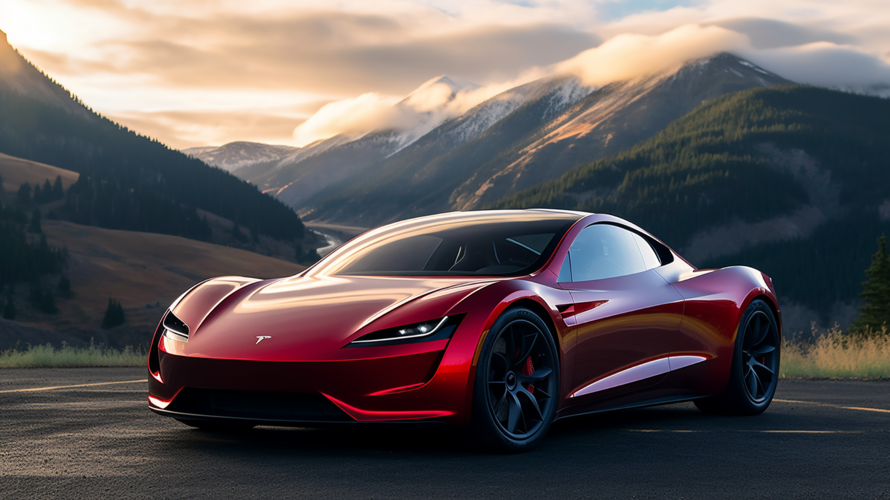
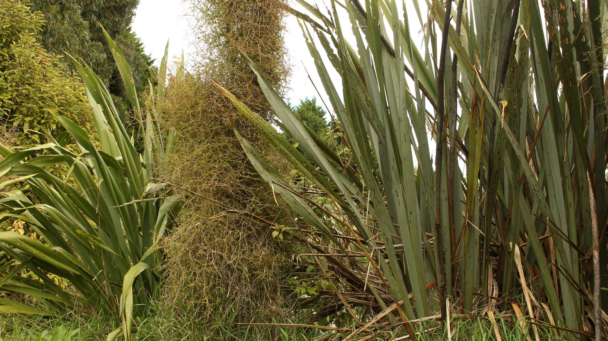

Support
How can you help?
According to the United Nations:
Save energy at home
Much of our electricity and heat are powered by coal, oil and gas. Use less energy by reducing your heating and cooling use, switching to LED light bulbs and energy-efficient electric appliances, washing your laundry with cold water, or hanging things to dry instead of using a dryer. Improving your home's energy efficiency, through better insulation for instance, or replacing your oil or gas furnace with an electric heat pump can reduce your carbon footprint by up to 900 kilograms of CO2e per year.
Change your home's source of energy
Ask your utility company if your home energy comes from oil, coal or gas. If possible, see if you can switch to renewable sources such as wind or solar. Or install solar panels on your roof to generate energy for your home. Switching your home from oil, gas or coal-powered energy to renewable sources of energy, such as wind or solar, can reduce your carbon footprint by up to 1.5 tons of CO2e per year. Learn more about why switching to renewable energy is key to tackling the climate crisis.

Walk, bike or take public transport
The world's roadways are clogged with vehicles, most of them burning diesel or gasoline. Walking or riding a bike instead of driving will reduce greenhouse gas emissions -- and help your health and fitness. For longer distances, consider taking a train or bus. And carpool whenever possible. Living car-free can reduce your carbon footprint by up to 2 tons of CO2e per year compared to a lifestyle using a car.
Switch to an electric vehicle
If you plan to buy a car, consider going electric, with more and cheaper models coming on the market. In many countries, electric cars help reduce air pollution and cause significantly fewer greenhouse gas emissions than gas or diesel-powered vehicles. Switching from a gasoline or diesel-powered car to an electric vehicle can reduce your carbon footprint by up to 2 tons of CO2e per year.

Consider your travel
Airplanes burn large amounts of fossil fuels, producing significant greenhouse gas emissions. That makes taking fewer flights one of the fastest ways to reduce your environmental impact. When you can, meet virtually, take a train, or skip that long-distance trip altogether. Taking one less long-haul return flight can reduce your carbon footprint by up to almost 2 tons of CO2e.
Reduce, reuse, repair and recycle
Electronics, clothes, plastics and other items we buy cause carbon emissions at each point in production, from the extraction of raw materials to manufacturing and transporting goods to market. To protect the climate, buy fewer things, shop second-hand, and repair what you can. Plastics alone generated 1.8 billion metric tonnes of greenhouse gas emissions in 2019 - 3.4 per cent of the global total.
Eat more vegetables
Eating more vegetables, fruits, whole grains, legumes, nuts, and seeds, and less meat and dairy, can significantly lower your environmental impact. Producing plant-based foods generally results in fewer greenhouse gas emissions and requires less energy, land, and water. Shifting from a mixed to a vegetarian diet can reduce your carbon footprint by up to 500 kilograms of CO2e per year.
Throw away less food
When you throw food away, you're also wasting the resources and energy that were used to grow, produce, package, and transport it. And when food rots in a landfill, it produces methane, a powerful greenhouse gas. So purchase only what you need, use what you buy and compost any leftovers. Cutting your food waste can reduce your carbon footprint by up to 300 kilograms of CO2e per year.
Plant native species
If you have a garden or even just a plant or two outside your home, check for native species. Use a plant identification app to help. And then think about replacing non-natives, especially any considered invasive. Plants, animals and insects depend on each other. Most insects will not eat non-native plants, which means birds and other species lose a food source. Biodiversity suffers. Even a single tree or shrub can offer a refuge - just remember to skip insecticides and other chemicals.

Clean up your environment
Humans, animals and plants all suffer from land and water contaminated by improperly discarded garbage. Use what you need, and when you have to throw something out, dispose of it properly. Educate others to do the same, and participate in local clean-ups of parks, rivers, beaches and beyond. Every year, people throw out 2 billion tons of trash. About a third causes environment harms, from choking water supplies to poisoning soil.
Make your money count
Everything we spend money on affects the planet. You have the power to choose which goods and services you support. To reduce your environmental impact, choose products from companies who use resources responsibly and are committed to cutting their gas emissions and waste. If you have money that is being invested for you, through a pension fund for instance, it may be supporting fossil fuels or deforestation.
Speak up
Speak up and get others to join in taking action. It's one of the quickest and most effective ways to make a difference. Talk to your neighbors, colleagues, friends, and family. Let business owners know you support bold changes - from plastics-free products and packaging to zero-emissions vehicles. Appeal to local and world leaders to act now. Climate action is a task for all of us. And it concerns all of us.
Contact me @22153@burnside.school.nz
© Rory Collins 2024